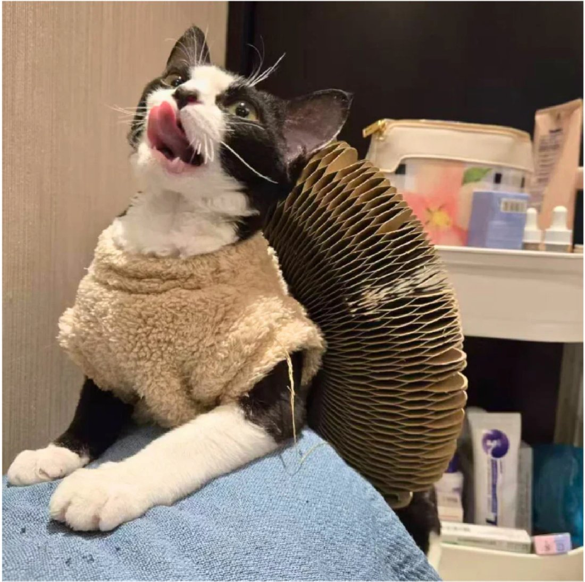
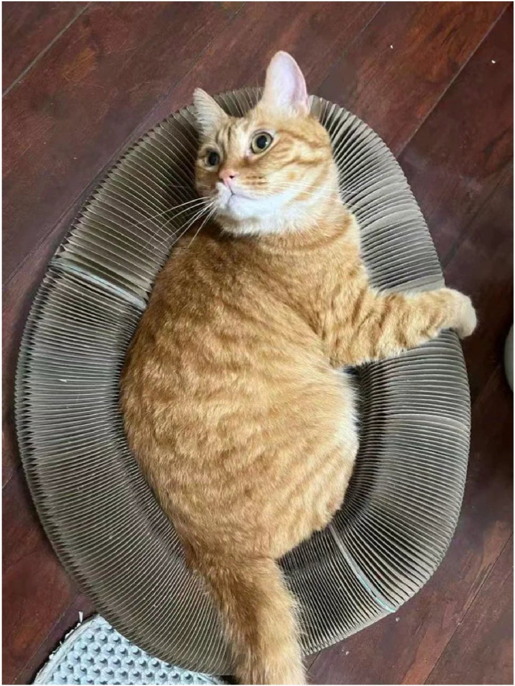
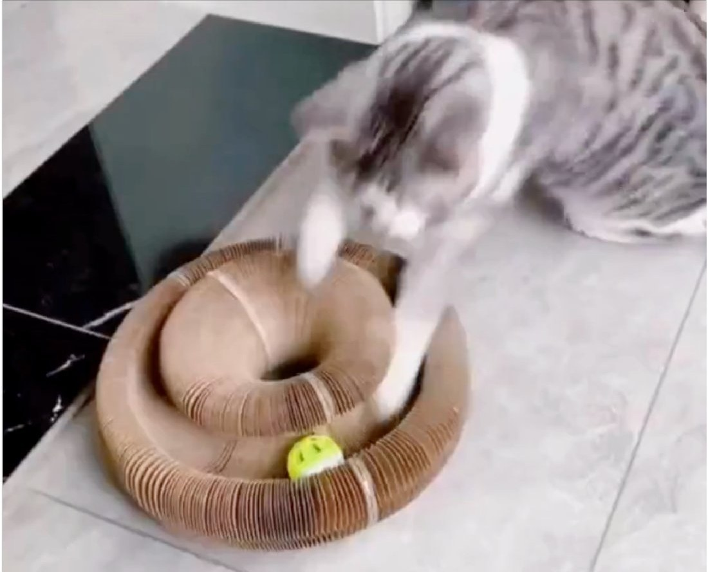
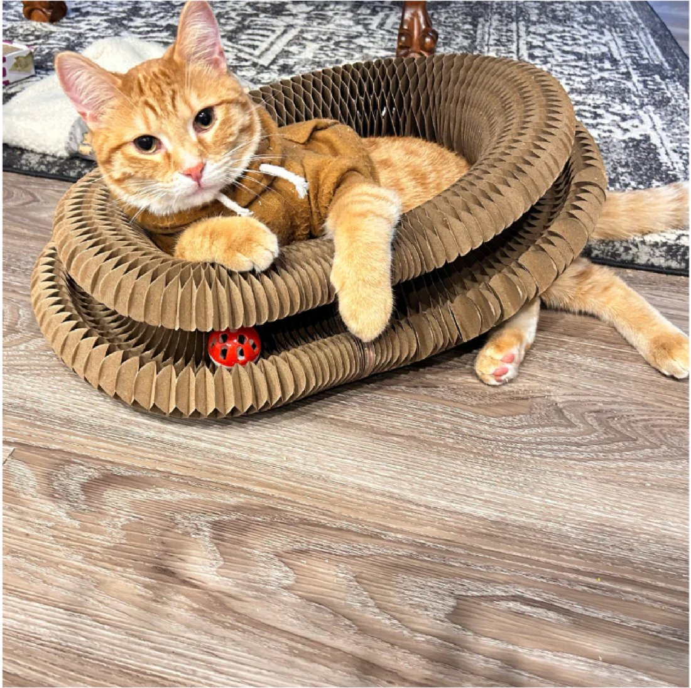
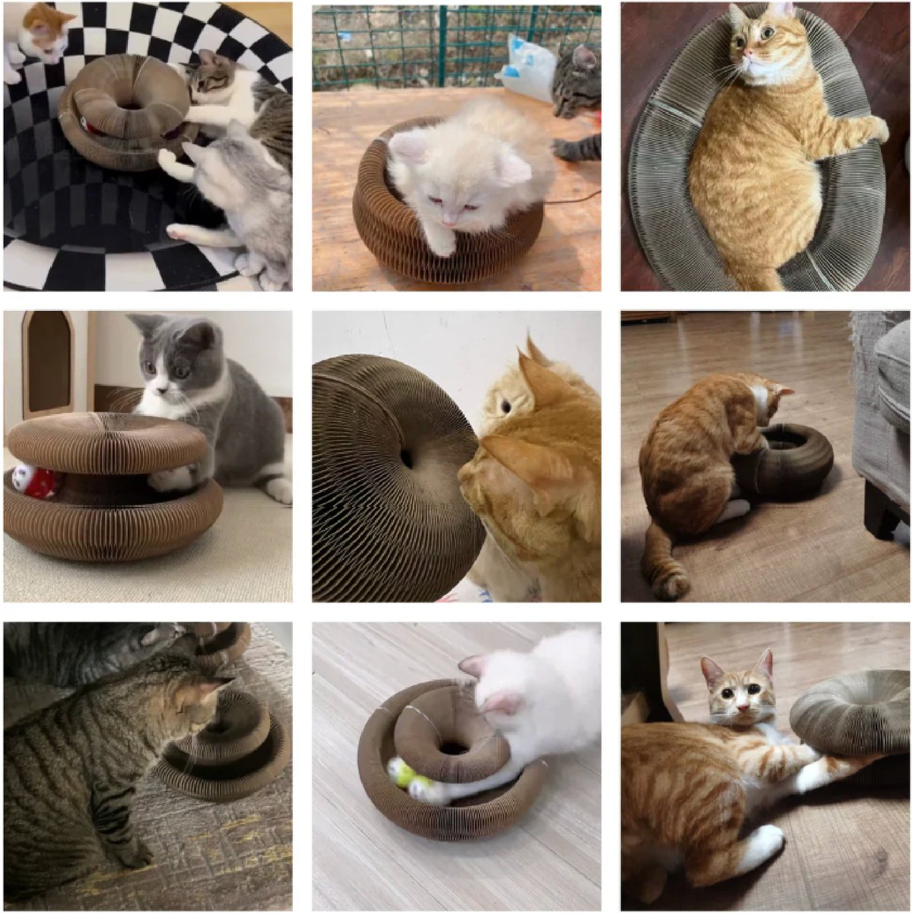
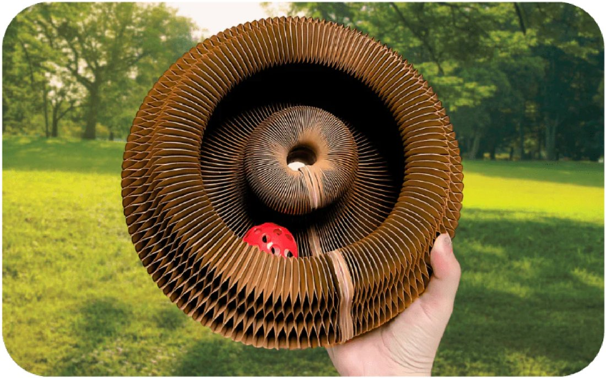
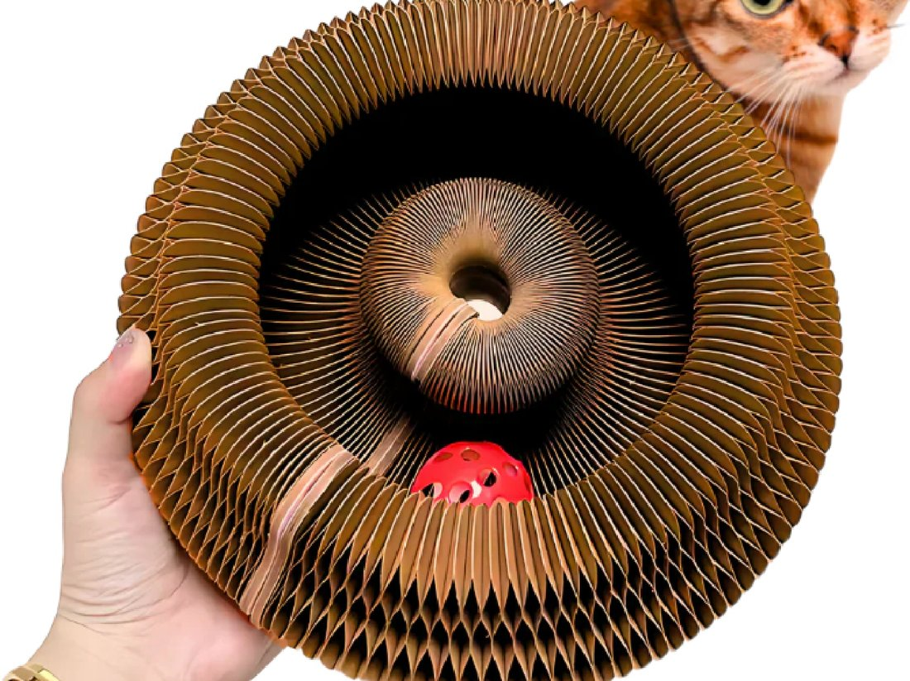

Quando è iniziato tutto, la frase che sentivo più spesso dai proprietari di gatti era sempre la stessa: «Ho provato di tutto, e ormai mi sento in colpa.»
So di cosa parli.
Apri la porta di casa e il primo sguardo va al divano, con un nodo allo stomaco.
Forse hai smesso di invitare gente.
E qualche notte pensi una cosa che non diresti a nessuno: «forse non dovevo prenderlo.»
Se ti riconosci in queste righe, leggi fino in fondo.
Quello che vivi non è un capriccio del tuo gatto, e non è colpa tua.
E si può risolvere.
"Il mio gatto distruggeva il divano da otto mesi. Avevo provato tre tiragraffi, lo spruzzino, persino il biadesivo sui braccioli. Niente. Dopo cinque giorni con Scratchy ha smesso. Non perché 'gli piace di più' — perché finalmente fa qualcosa che il tiragraffi non gli faceva fare."
Il tuo gatto non è "maleducato".
È un predatore. Ha bisogno di fare una cosa precisa, in quattro fasi: vede, si apposta, cattura, morde.
In appartamento non completa mai questa sequenza. Così resta con l'istinto di caccia inappagato.
Il tiragraffi copre una sola di quelle fasi: farsi le unghie. Le altre tre no.
Ecco perché torna sul divano: non è un capriccio, è un istinto che cerca di sfogarsi da un'altra parte.
Scratchy gliele fa fare tutte e quattro.
Vede i tunnel, si apposta dietro le pieghe, cattura sulla superficie, e dà il morso finale che chiude la caccia.
È quel momento che lo fa smettere di cercare il divano.

"Avevo provato di tutto: il laser, il Feliway, le bacchette con le piume, persino un secondo gatto per 'compagnia'. Sono 400 euro buttati. Scratchy è un'altra cosa. Mio marito, il primo scettico della storia, ha ammesso che il divano è intatto da tre mesi."
Gli studi sul comportamento felino mostrano che il puntatore laser lascia la caccia senza una preda da catturare: la sequenza resta aperta e frustra il gatto.
Il laser non lo stanca. Lo agita.
Il Feliway copre la tensione con i profumi, ma non scarica niente.
Il suo corpo continua a chiedere l'unica cosa che gli serve: cacciare.
È come dare un calmante a chi ha bisogno di muoversi.
Scratchy non aggiunge un'altra distrazione. Toglie la causa.
Voglio agire sulla causa →
"Quando è arrivato ho pensato: ho pagato per del cartone? Poi ho fatto due conti. Avevo speso molto di più in tiragraffi e diffusori che il gatto aveva ignorato. Questa è l'unica cosa che ha usato davvero — e il divano da allora non l'ha più toccato."
Lo so cosa pensi quando lo vedi.
È cartone a nido d'ape.
Come può valere questa cifra?
Girala al contrario.
Fai la somma di quello che hai già speso per questo problema.
Il tiragraffi. Magari due.
Il diffusore, con le ricariche.
Il laser.
I topini nel cassetto.
Forse un secondo gatto "per fargli compagnia".
Quasi sempre è molto più di quanto credi.
E tutto per cose che toccavano le unghie, l'olfatto, la noia.
Mai la causa.
Un comportamentalista felino costa intorno ai 150 euro a seduta, e lavora proprio sull'arricchimento dell'ambiente. Qui quella stessa idea la metti in casa una volta sola.
Non stai comprando del cartone.
Stai comprando la prima cosa costruita per agire sulla causa — e per farlo anche quando tu non sei a casa.
Il cartone a nido d'ape non è un risparmio: è il materiale che si modifica sotto gli artigli, assorbe l'odore del gatto e regge nel tempo. La plastica non lo fa.
Il tuo gatto non ha bisogno dell'ennesimo oggetto.
Ha bisogno della cosa giusta.

"Ho un cassetto pieno di topini, palline con campanellini, due bacchette. Il gatto le guardava un giorno e poi le ignorava per sempre. Con Scratchy è diverso: ci torna ogni giorno da tre mesi, e nello stesso periodo il divano è rimasto intatto."
Diciamocelo: la cosa che attira di più il tuo gatto non è quella da 25€ che gli hai comprato.
È un elastico sotto il letto, o un tappo di plastica che rimbalza alle 3 di notte.
Sai perché? Quegli oggetti fanno rumori imprevedibili e reagiscono ai suoi movimenti.
Insomma, si comportano come una preda vera.
Scratchy fa la stessa cosa, ma in un formato sicuro.
La superficie cede in modo diverso ogni volta, come farebbe un piccolo animale sotto le zampe.
E il gatto, spostandolo, lo cambia — proprio come una preda che si muove.
Per questo non si esaurisce dopo due giorni: ogni volta risponde in modo un po' diverso.
Il suo cervello non riesce a segnarlo come "già visto" — e continua a trattarlo come una preda da catturare, giorno dopo giorno.

"Primi giorni: niente. L'ha guardato da lontano e basta. Stavo per scrivere per il reso. Poi verso il decimo giorno ci si è infilato dentro. Ora ci passa ore."
È la domanda più giusta che puoi farti. Se ha già ignorato tre tiragraffi, hai ragione a essere diffidente.
Ma c'è una cosa sui primi giorni che quasi nessuno spiega — ed è per questo che tanti mollano troppo presto.
Quando arriva un oggetto nuovo, il gatto non lo usa subito. Prima lo osserva per qualche giorno: odore, posizione, sicurezza.
Non è disinteresse: sta solo studiando l'oggetto nuovo, è normale.
I primi tre o quattro giorni girerà intorno a Scratchy senza usarlo.
Più è spento o diffidente, più sarà lento a partire.
Non vuol dire che non funziona: è la fase normale.
Ecco perché hai 60 giorni per provarlo a casa, non tre.
Il tempo perché un gatto cambi abitudini non si misura in giorni, ma in settimane.
Se dopo due mesi non è cambiato niente, scrivici e organizziamo il reso: senza dover dimostrare niente e senza rimandarci il prodotto.
Ti risponde una persona vera entro 24 ore.
Provalo 60 giorni, zero rischi →
"L'ho preso dopo mesi di divano distrutto. In dieci giorni ha smesso di fare le unghie sul divano. Vale dieci volte quello che ho pagato."
Da quando Scratchy è arrivato in Italia, migliaia di proprietari hanno lasciato una recensione, con una media di 4,8 su 5.
Ma il dato più importante è un altro: tanti, dopo aver visto funzionare il primo, ne ordinano un secondo per un'altra stanza nel giro di poche settimane.
Hanno scoperto tutti la stessa cosa: il problema non era il loro gatto.
E non erano loro.
Era una causa che nessuno aveva mai spiegato — e che nessun tiragraffi, diffusore o gioco poteva toccare.
Il tuo gatto non è rotto.
E tu non hai sbagliato niente.
Mancava solo lo strumento giusto.

"Ho preso il Kit 2+2, uno per il salotto e uno per la camera. È la prima volta da quando ho il gatto che dormo otto ore di fila. Adesso ne regalo uno a mia sorella che ha lo stesso problema."
Hai 60 giorni per provarlo a casa. Se non diventa il posto preferito del tuo gatto, ti rimborsiamo.
Senza domande, senza moduli, senza rimandarci il prodotto.
Ma c'è una cosa importante, perché fa la differenza tra chi vede risultati e chi no.
Un gatto non vive in un punto solo della casa. Si muove tra divano, finestra, corridoio, camera.
E l'istinto di caccia inappagato si sente in tutti quei punti, non in uno.
Per questo un solo Scratchy, messo in un angolo, viene ignorato come il tiragraffi: sta in un posto, e il gatto vive in cinque.
Ecco come scegliere — in base a quanta casa vuoi coprire, non a quanti gatti hai:
Kit 1+1 — 34,90€ · Per iniziare.
Copre una sola zona. È il minimo per provare.
⭐ Kit 2+2 — 59,90€ · La casa completa. La scelta della maggior parte.
Uno Scratchy in salotto, uno in camera o nel corridoio: il gatto ha il suo posto in ogni stanza. Non serve avere due gatti.
E da qui in su sblocchi spedizione prioritaria gratuita e in regalo "La Mappa dei Punti Caldi": ti dice esattamente dove metterli perché il gatto li usi subito.
Kit 3+3 — 89,90€ · Scorta o più gatti.
Per chi ha più di un gatto, o vuole coprire tutta la casa senza pensieri.
Un'ultima cosa onesta: se hai più di un gatto, ti serve un kit in più per coprirli tutti. Due gatti non si dividono il territorio — uno se lo prende, l'altro resta fuori e continua come prima.
Ma anche con un solo gatto, il Kit 2+2 resta la scelta giusta: è la casa coperta davvero, non un oggetto lasciato in un angolo.

Clicca sotto e scegli il tuo kit finché l'offerta è disponibile.
Voglio l'offertaSCORTE LIMITATE: fino a esaurimento